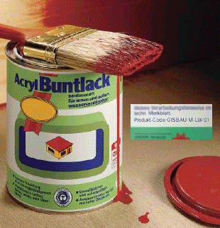

Bei Tätigkeiten mit Be- und Entschichtungsprodukten muss bekannt sein, ob von den Produkten Gefahren ausgehen, um ggf. Schutzmaßnahmen beim Verarbeiten ergreifen zu können. Es ist bei der großen Anzahl von Produkten sinnvoll, diese bei vergleichbaren Gefährdungen, Schutzmaßnahmen und Verhaltensregeln zu Gruppen zusammenzufassen.
GISBAU hat in Zusammenarbeit mit allen beteiligten Kreisen - dem Hauptverband Farbe Gestaltung Bautenschutz, der Industriegewerkschaft Bauen-Agrar-Umwelt und dem Verband der deutschen Lackindustrie e.V. - eine Einteilung der unterschiedlichen Produkte in Gruppen vorgenommen, die das breite Produktspektrum im Hinblick auf den Arbeits- und Gesundheitsschutz überschaubar macht. Damit ist es möglich, anhand einer überschaubaren Anzahl von Produktgruppen über die Vielzahl der zu verarbeitenden Produkte zu informieren. Die Produktgruppen wurden zwecks einfacherer Handhabung mit einem Produkt-Code versehen.
Der Produkt-Code besteht aus einer Buchstaben-Zahlen-Kombination, wobei der Buchstabe M auf das Maler- und Lackiererhandwerk hinweist. Die nachfolgende Buchstabenkombination verweist auf die Art des Be- oder Entschichtungsstoffes.
Die Hersteller ordnen ihre Produkte den Produktgruppen, die mit dem Produkt-Code versehen sind, zu. Der Produkt-Code wird auch auf die Herstellerinformationen (Sicherheitsdatenblatt, Technisches Merkblatt, Preisliste usw.) und das Gebindeetikett (siehe Abbildung) aufgedruckt, womit ein eindeutiges Zuordnungsmerkmal geschaffen ist.
Anhand des Produkt-Codes auf den Herstellerinformationen ist die jeweilige GISBAU-Information auszuwählen. Die dort aufgeführten Maßnahmen und Verhaltensregeln treffen auch auf das ausgewählte Einzelprodukt zu.
| Produktgruppen | Produkt-Code | Bezeichnung |
| Dispersionsfarben, wasserverdünnbar |
M-DF01 M-DF02 M-DF03 M-DF04 |
Dispersionsfarben, lösemittelfrei* Dispersionsfarben Naturharzfarben, lösemittelfrei* Naturharzfarben |
| Lackfarben, wasserverdünnbar |
M-LW01 | Dispersionslackfarben |
| Lackfarben, lösemittelverdünnbar |
M-LL01 M-LL02 M-LL03 M-LL04 M-LL05 |
Alkydharzlackfarben, entaromatisiert Alkydharzlackfarben, aromatenarm Alkydharzlackfarben, aromatenreich Ölfarben, terpenhaltig Ölfarben, terpenfrei |
| Grundanstrichstoffe, farblos | M-GF01 M-GF02 M-GF03 M-GF04 M-GF05 |
wasserverdünnbar lösemittelverdünnbar, entaromatisiert lösemittelverdünnbar, aromatenarm lösemittelverdünnbar, aromatenreich lösemittelverdünnbar |
| Grundanstrichstoffe, pigmentiert | M-GP01 M-GP02 M-GP03 M-GP04 M-GP05 |
wasserverdünnbar lösemittelverdünnbar, entaromatisiert lösemittelverdünnbar, aromatenarm lösemittelverdünnbar, aromatenreich lösemittelverdünnbar |
| Klarlacke, Holzlasuren | M-KH01 M-KH02 M-KH03 M-KH04 M-KH05 |
wasserverdünnbar lösemittelverdünnbar, entaromatisiert lösemittelverdünnbar, aromatenarm lösemittelverdünnbar, aromatenreich lösemittelverdünnbar |
| Bläuewidrige Anstrichmittel | M-BA01 M-BA02 |
lösemittelverdünnbar, aromatenarm
wasserverdünnbar |
| Silikatfarben | M-SK01 M-SK02 |
1K-Silikatfarben 2K-Silikatfarben |
| Siliconharzfarben | M-SF01 | wasserverdünnbar |
| Polymerisatharzfarben | M-PL01 M-PL02 M-PL03 M-PL04 |
lösemittelverdünnbar, entaromatisiert
lösemittelverdünnbar, aromatenarm lösemittelverdünnbar, aromatenreich lösemittelverdünnbar |
| Verdünnungsmittel | M-VM01 M-VM02 M-VM03 M-VM04 M-VM05 |
entaromatisiert aromatenarm aromatenreich Spezialverdünnungsmittel terpenhaltig |
| Ablauger/Abbeizer | M-AL10 M-AL20 M-AB10 M-AB20 M-AB30 M-AB40 |
Ablauger, alkalisch, reizend Ablauger, alkalisch, ätzend Abbeizer, lösemittelhaltig, dichlormethanfrei Abbeizer, lösemittelhaltig, hautresorptiv, dichlormethanfrei Abbeizer, dichlormethanhaltig, methanolfrei Abbeizer, dichlormethanhaltig, methanolhaltig |
| * | Lösemittel sind alle flüchtigen,
organischen Verbindungen mit einem Siedepunkt bis einschließlich 250°C. Als lösemittelfrei gelten Dispersionsfarben mit max. 1g Lösemittel pro Liter Farbe. |
In der modernen Bauwirtschaft verarbeiten die Betriebe des Malerund Lackiererhandwerks nicht nur die klassischen Bautenfarben bzw. Bautenlacke, sondern sind auch in anderen Bereichen wie dem Korrosionsschutz oder der Industriefußbodenbeschichtung tätig. Hier werden häufig auch Reaktionsharze verarbeitet. Da diese Beschichtungsstoffe von unterschiedlichen Branchen verarbeitet werden, sind sowohl für Epoxid- als auch für Polyurethanharze Codierungen gewählt worden, die keinen unmittelbaren Branchenbezug erkennen lassen. Beide Produktgruppen-Systeme tragen die Bezeichnung "GISCODE".
| GISCODE | Produktgruppenbezeichnung |
RE0 RE1 RE2 RE2.5 RE3 |
Epoxidharze Epoxidharzdispersionen Epoxidharzprodukte, lösemittelfrei**, sensibilisierend Epoxidharzprodukte, lösemittelarm, sensibilisierend Epoxidharzprodukte, lösemittelhaltig Epoxidharzprodukte, lösemittelhaltig, sensibilisierend |
PU10 PU20 PU30 PU40 PU50 |
Polyurethanharze Polyurethanharzprodukte, lösemittelfrei*** Polyurethanharzprodukte, lösemittelhaltig Polyurethanharzprodukte, lösemittelhaltig, gesundheitsschädlich Polyurethanharzprodukte, lösemittelfrei, gesundheitsschädlich, sensibilisierend Polyurethanharzprodukte, lösemittelhaltig, gesundheitsschädlich, sensibilisierend |
| ** | Lösemittel sind alle flüchtigen,
organischen Verbindungen mit einem Siedepunkt bis einschließlich
200°C. Als lösemittelfrei gelten Produkte mit einem Lösemittelanteil von max. 0,5%. |
| *** | Lösemittel sind alle flüchtigen,
organischen Verbindungen mit einem Siedepunkt bis einschließlich
200°C bei Normaldruck, die bei der Aushärtung keine chemische Reaktion eingehen. Als lösemittelfrei gelten Produkte mit einem Lösemittelanteil von max. 0,5%. |